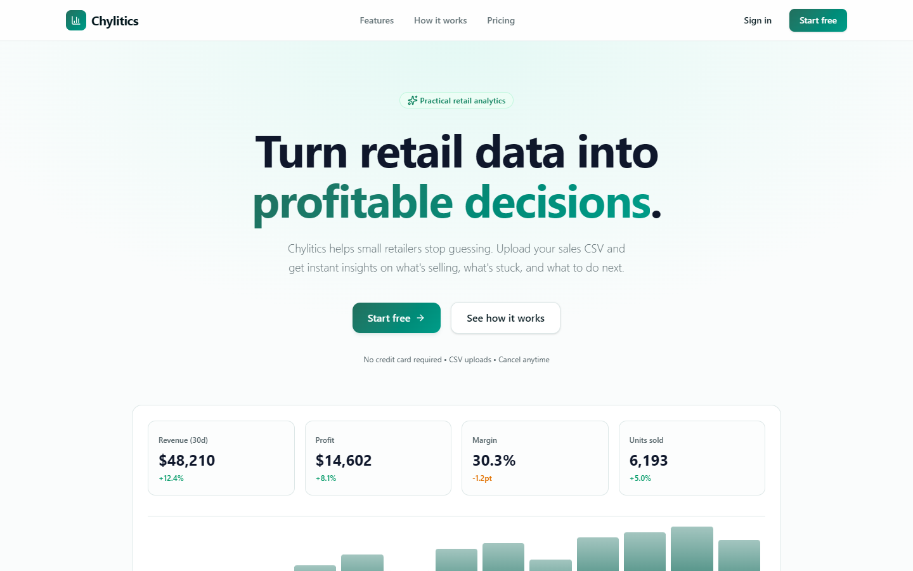
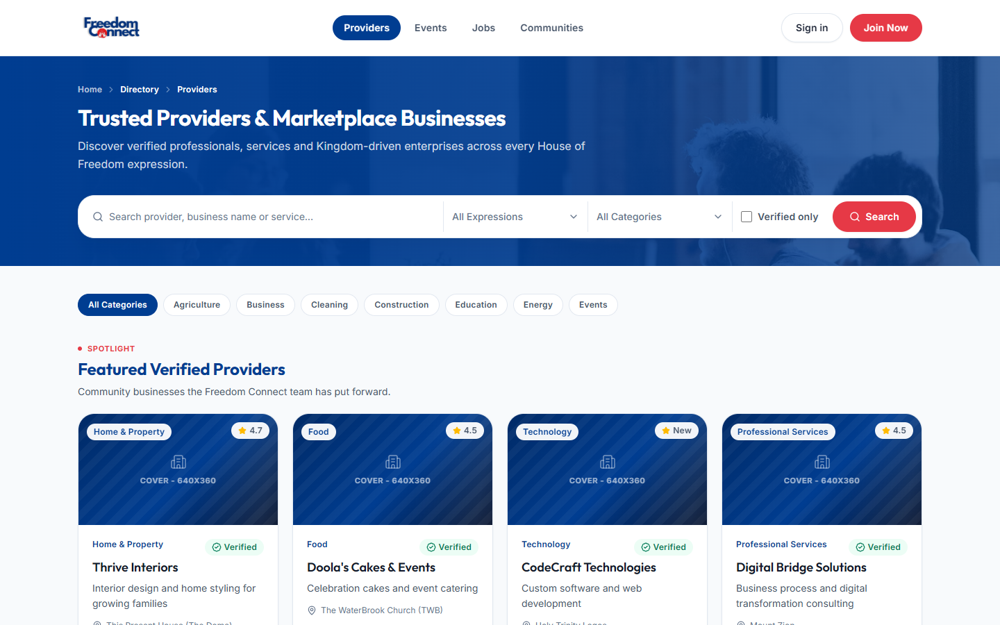
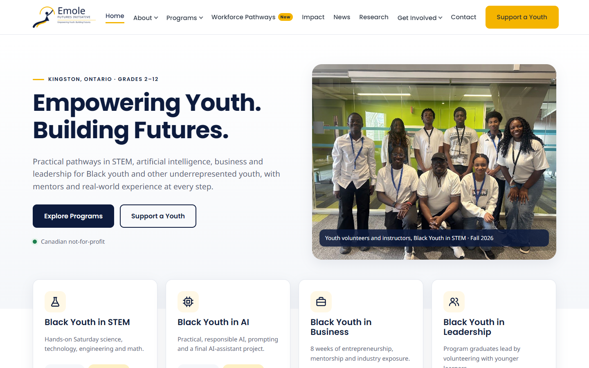

I build web products that are fast,
accessible, and easy to use.
Frontend software engineer
React, Next.js and TypeScript
Onyekachi Okwuolisa
Selected work
Chylitics
Retail analytics for small shops. Upload a sales file and see what’s selling, what’s stuck and what’s about to expire, with an email before stock runs out.
See more
- Problem
- Small grocery and beauty shops keep their sales in spreadsheets, but can’t easily tell which products make money or which batches are close to expiring.
- Solution
- Upload a sales file and get profit, margin and stock in one dashboard. Stock is taken from the oldest batch first, and low-stock and expiry alerts arrive by email.
- My role
- The full build, from database design to deployment. Each shop’s data is kept apart by the database itself, and that is covered by automated database tests.

Freedom Connect
A marketplace, jobs board, events hub and community network for a business alliance, where every listing is checked before it goes live.
See more
- Problem
- Members of the alliance needed one trusted place to find each other’s businesses, events and job openings.
- Solution
- A searchable directory of verified providers, events with registration, a jobs board and communities, with an admin area that approves listings and reviews big edits before they go public.
- My role
- Full-stack build for TechHub, from the database and access rules to every screen.

Pacetone
Scores a draft for empathy, directness and leadership, points out the exact phrases that hurt its tone, and rewrites it to fit your goal.
See more
- Problem
- Written messages get read in a tone the writer never meant, and nobody tells you until the damage is done.
- Solution
- Three named scores instead of one vague grade, highlights on the phrases behind each score, and a rewrite in your own voice.
- My role
- Product design and the full build, from the scoring screen to sign-in, with automated accessibility checks in the end-to-end tests.

Emole Futures
The new website of a Canadian not-for-profit that runs STEM, AI, business and leadership programs for Black youth, moved off Wix and rebuilt so funders can see the work.
See more
- Problem
- The old site hadn’t been updated since it launched, even though the programs had grown, and it didn’t answer what a grant reviewer needs to know.
- Solution
- A fast, plain-HTML site with real program photos, pages for impact, governance and safeguarding, news updates, and registration and volunteer forms.
- My role
- Planning, design, build and ongoing management of the site through Informanos.

Good software should feel considered.
I’m Onyekachi, a frontend software engineer in Lagos. I build with React, Next.js and TypeScript, and work across the stack when a product needs it.
I currently work with Informanos, a Canadian analytics and AI company, building data platforms and client websites from the database to the last screen.
Graduated as a chemical engineer, and I still care most about the same things: clear systems, accessible details, and the small decisions that make a product easier to use.